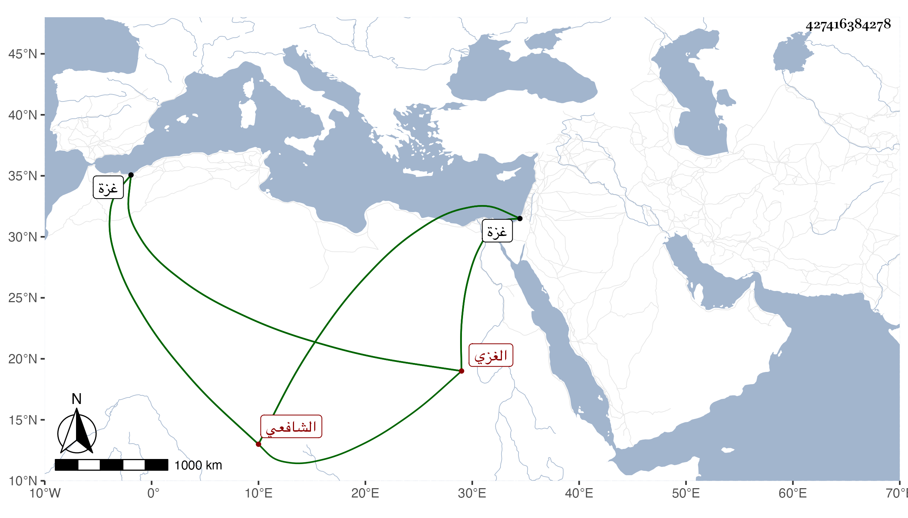

0902Sakhawi.DawLamic.ITO20230111-ara1.EIS1600.427416384278
Biography ID: 427416384278
226
عبد الرحمن بن ذي النون محمد بن عبد الله بن صالح الزين الغزي الشافعي ويعرف بأبيه . ولد في سنة خمس وثمانمائة أو في أوائل التي تليها بغزة وتلا لنافع وابن كثير وأبي عمر وعلي الشهاب بن عابد الغزي ولقي ابن الجزري بظاهر غزة فأجاز له وتصدى لتعليم الأبناء ببلده فانتفع به جماعة لحسن تعليمه ووفور نصحه وديانته ، وكان خيرا صالحا فاضلا حسن العشرة مهتما بحوائج إخوانه بل وغيرهم وكف بصره وضعفت حركته جدا بحيث صار لا حراك به ، ومات في يوم الجمعة تاسع المحرم سنة إحدى وثمانين رحمه الله وإيانا .
